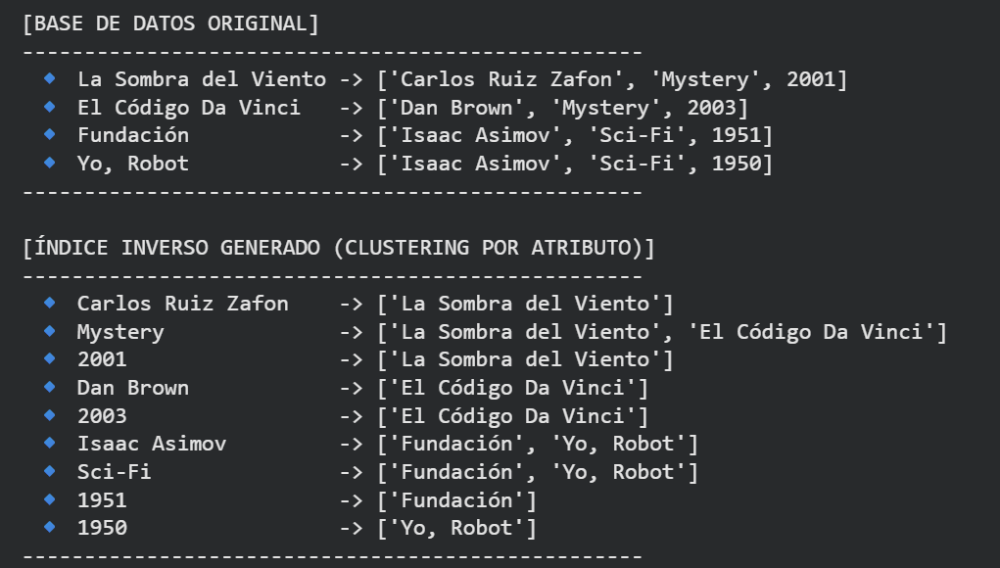

🐍 Fundamentos y Lógica en Python
Scripts listos para producción con enfoque en estructuras de datos, limpieza de datos e Inteligencia Artificial.
🔍 1. Reverse Index Builder
Algoritmo que transforma una base de datos estructurada en un índice inverso, mapeando dinámicamente valores múltiples (como autores y géneros) de vuelta a sus claves principales. Lógica fundamental detrás de los motores de búsqueda y grafos de conocimiento.


📊 2. Dataset Preprocessor (Pipeline ETL)
Pipeline de procesamiento de datos automatizado que extrae, transforma y limpia conjuntos de datos crudos. Maneja valores nulos, estandariza formatos y prepara la información para el entrenamiento de modelos de Machine Learning de forma eficiente.


🗺️ 3. Algoritmo de Búsqueda BFS (Pathfinding)
Implementación orientada a objetos del algoritmo de búsqueda en anchura (Breadth-First Search). Diseñado para encontrar la ruta más corta en matrices bidimensionales, una base esencial para la navegación espacial y el pathfinding en robótica móvil.